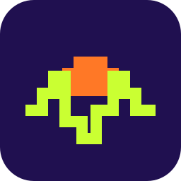
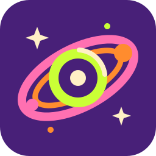
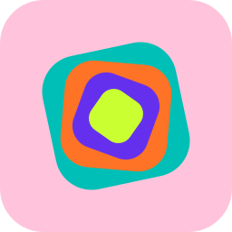
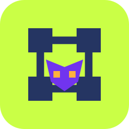
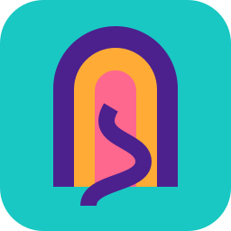
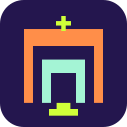
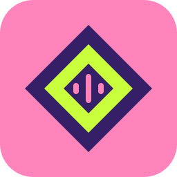
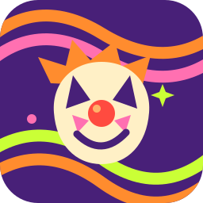

Film & television
Turn the dial. Old movies, creature features, cartoons and late-night discoveries.
v1.0.0
An independent creative playground
Games, film, music, comics and curious little experiments.
Some finished. Some unfolding. Some just a spark.
Made to be explored.
Finished experiences and tools, ready to open.
Film & television
Turn the dial. Old movies, creature features, cartoons and late-night discoveries.
v1.0.0

Browser synthesizer
Explore frequency, chords, panning, vibrato and sequencing. Make a little noise.
v1.0.0
Ongoing comic
A weary professional musician keeps getting dragged into sword-and-sorcery adventures.
v1.0.0

DJ mixes & musical exploration
Browse a galaxy of DJ mixes. Every solar system is a session; every planet and moon is a track.
v1.0.0
No projects in this category here yet.
Still becoming.
Playable experiments, evolving worlds and ongoing work.
Blackjack RPG · In development
An endless blackjack roguelike. Ante up, identify monsters and survive to bank a gold high score.
Playable demo · v0.3.0

Colour & sound
A tactile playground where colour, sound and haptic feedback meet.
v0.1.0

Dungeon mapping
Map the unknown. A browser companion for dungeon crawlers and adventures.
v0.1.0
Music & audio
A late-night listening room. Explore the recordings in the audio archive.
v0.1.0

Exploration RPG
An evolving sandbox RPG about taking the long way and seeing what turns up.
v0.1.0

Dungeon crawler · On hold
Old-school dungeon crawling, after dark. Currently on hold, with a build to explore.
v0.1.0

Audio adventure
A headphone-first dungeon crawler built around sound, touch and imagination.
v0.1.0
Game experiment
An evolving game experiment from North Path Interactive.
v0.1.0
No projects in this category here yet.
A spark of something.
Early concepts waiting for their moment.
Early game concept
An early game idea, still waiting to take shape.
Concept

Comic concept · Coming Christmas 2026
A clown. A daughter to protect. A detective losing his grip. A gritty New York comic where the supposed villain may be the hero.
Concept
No projects in this category here yet.